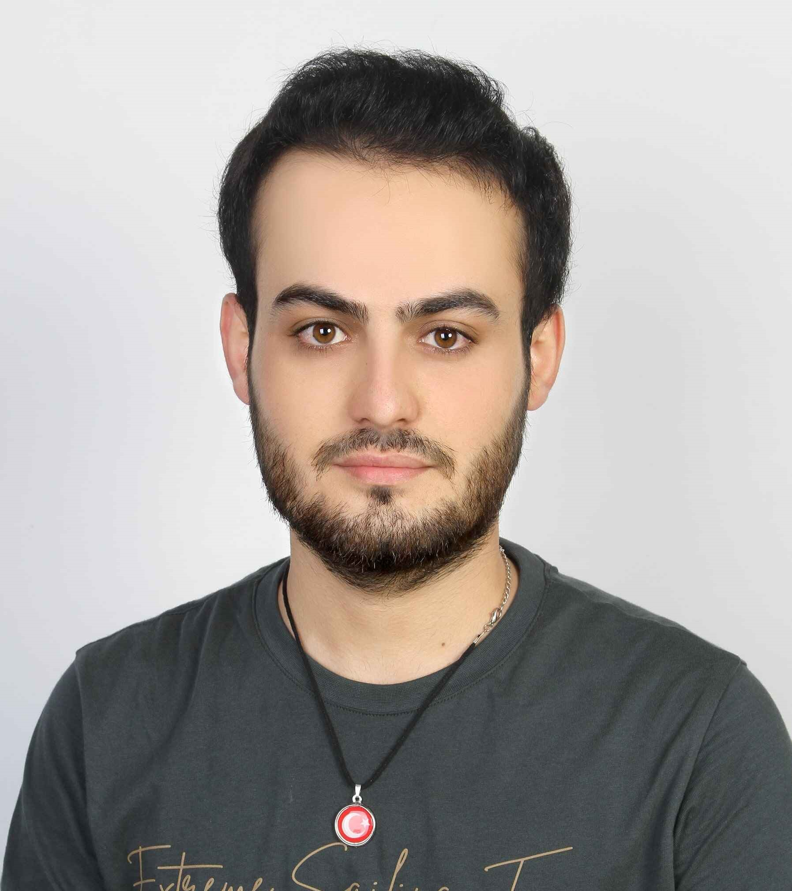

Emir Behçet Muhammed - CV
ÖZET:
Kendini sürekli geliştiren ve teknolojiye olan tutkusunu her fırsatta
ortaya koyan bir yazılım geliştiricisiyim.
Fenerbahçe Üniversitesi'nde Bilgisayar Mühendisliği alanında
aldığım eğitimle teorik bilgileri pratiğe dökme şansı buldum ve
üniversiteden U.Ö. alanında birincilikle mezun oldum Patika.Dev,
Akçasoft Yazılım ve Avionchip Teknoloji gibi prestijli firmalarda
edindiğim tecrübelerle yazılım dünyasında farklı alanlarda önemli projeler
gerçekleştirdim.
EĞİTİM:
Fenerbahçe Üniversitesi, Istanbul, Türkiye - Mezuniyet Yılı: 2024
-
Bilgisayar Mühendisliği lisans diploması (Onur Derecesi), U.Ö. alanında
üniversite birinciliği, GNO: 3.28/4.0
-
Fenerbahçe Üniversitesi Yazılım ve Bilişim Kulübü Başkan Yardımcılığı.
Patika+ 6-month Fullstack Web Development Bootcamp -
Mezuniyet Yılı: 2024
-
Türkiye'nin en seçkin ve yoğun bootcamplerinden birine kabul edilip,
eğitim görmekteyim.
-
Java, SpringBoot, HTML, CSS, JavaScript ve SQL teknolojilerini
kullanarak çeşitli projeler geliştirmekteyim.
PROFESYONEL DENEYİM:
Patika.Dev, Istanbul, Türkiye (Full Stack Development | Nisan 2024 - Devam Ediyor)
-
Kurumsal düzeyde kullanıcı deneyimini ve sistem güvenilirliğini artıran
uygulamalar geliştiriyorum ve sürdürüyorum. RESTful API'ler tasarlıyor,
üçüncü taraf hizmetlerle entegrasyonu kolaylaştırıyorum. Frontend ve
backend teknolojilerini kullanarak tam yığın web uygulamaları
geliştiriyorum.
-
Kod incelemeleri gerçekleştirerek ve danışmanlık alarak kod kalitemi
artırıyor, sürekli olarak geliştirici becerilerimi ve genel yazılım
kalitesini yükseltiyorum.
İnternet sitesi:
Akçasoft, Ankara, Türkiye (Junior Frontend Developer (Intern) | Haziran 2023 - Eylül 2023)
-
Frontend geliştirmelerinde, HTML, CSS ve JavaScript kullanarak dinamik
web uygulamaları geliştirdim. Modern frontend framework'leri, özellikle
React.js ve NestJS ile çalışarak kullanıcı dostu ve etkileşimli
arayüzler oluşturdum.
İnternet sitesi:
AvionChip Inc, Istanbul, Türkiye (HLS Proje Asistanı (Intern) | Temmuz 2022 - Eylül 2022)
-
Vitis High-Level Synthesis (HLS) projesinde, Proje Başkan Yardımcısı
olarak görev aldım. HLS araçlarını kullanarak karmaşık algoritmaların
donanım uygulamalarına dönüştürülmesi konusunda çalışmalar yaptım.
Verilog ve System Verilog kullanarak donanım tanımlama dilleri ile
projeler geliştirdim.
PROJELER:
Angular ve NestJS ile güçlendirilmiş e-ticaret sitesi
-
Günlük 1.000+ işlem kapasiteli e-ticaret platformu geliştirdim. Güvenli
ödeme ağ geçitleri ve optimize edilmiş veritabanı performansı sağladım.
Angular ve NestJS kullanarak dinamik arayüzler ve ölçeklenebilir API'ler
oluşturdum.
Patika+ Bootcamp Projeleri
-
Turizm acentesi yönetim sistemi geliştirdim, kapsamlı özellikler sunarak
rezervasyon ve müşteri yönetimini kolaylaştırdım. Veterinerlik yönetim
sistemi üzerinde çalışarak hasta kayıtları, randevu takibi ve veteriner
hizmetlerini yönettim. Macera oyunu tasarlayarak Java ve Spring Boot
kullanarak dinamik ve etkileşimli bir oyun deneyimi sundum
YETENEKLER:
Programlama dilleri:
- Java
- Python
- JavaScript
- C++
- C
- Matlab
- C#
- Verilog
- System Verilog
- PostgreSQL
- MySQL
- HTML5
- CSS3
Bilgisayar yazılımı/frameworks:
- Microsoft Office
- Spring Boot
- Git
- React
- Node.js
- RESTful API
- Angular
Diller: